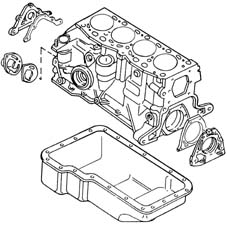
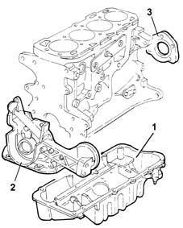

Introduction - CRANKCASE SUMP AND COVERS
- Path
- Descriptions > 10 ENGINE UNIT > 1020 CRANKCASE SUMP AND COVERS > Introduction - CRANKCASE SUMP AND COVERS
- Kind
- system description
- Applies to
- all engines; all production periods
- Interactive page
- https://sloeber94.github.io/elrnDB-fMltpl/en/#/2892420
Applies to: engines: 1.6 16v; all production periods
The sump has the task of housing the engine lubrication oil; it is made from pressed steel and includes the port and plug for draining the oil. The seal with the crankcase is ensured by a bead of silicon sealant.
The timing side and flywheel side covers guarantee the crankshaft seal and are fixed to the crankcase by bolts.

Applies to: engines: 1.9 JTD 8V; all production periods
The oil sump is made of aluminium alloy. Its function is to collect oil for lubricating the engine; it is bolted to the cylinder block. The seal on the join is ensured by a bead of silicone sealant.
The covers on the timing gear and flywheel sides comprise oil seals to seal the crankshaft.
The cover on the timing gear side constitutes the mounting for the oil filter, and incorporates the oil pump 1084 ENGINE LUBRICATION SYSTEM).

1, Oil sump 2, Crankshaft front cover 3, Crankshaft rear cover